Changes in PRIMAP-hist v2.6.1_final compared to v2.6_final for Ethiopia
2025-03-19
Johannes Gütschow
Change analysis for Ethiopia for PRIMAP-hist v2.6.1_final compared to v2.6_final
Overview over emissions by sector and gas
The following figures show the aggregate national total emissions excluding LULUCF AR6GWP100 for the country reported priority scenario. The dotted linesshow the v2.6_final data.
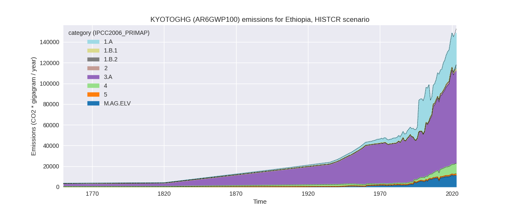
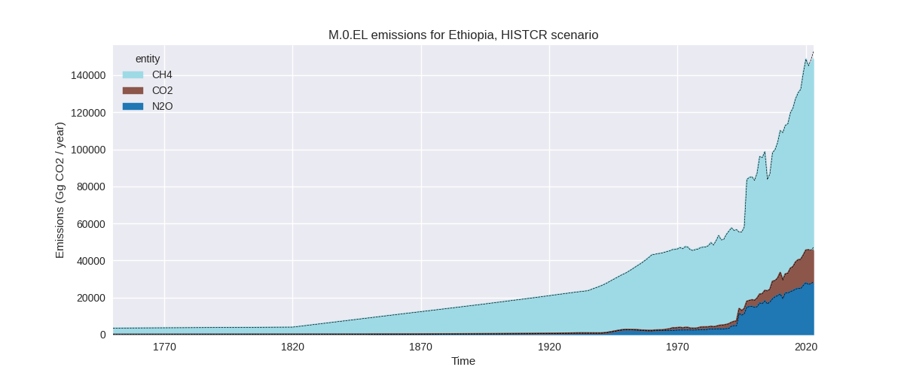
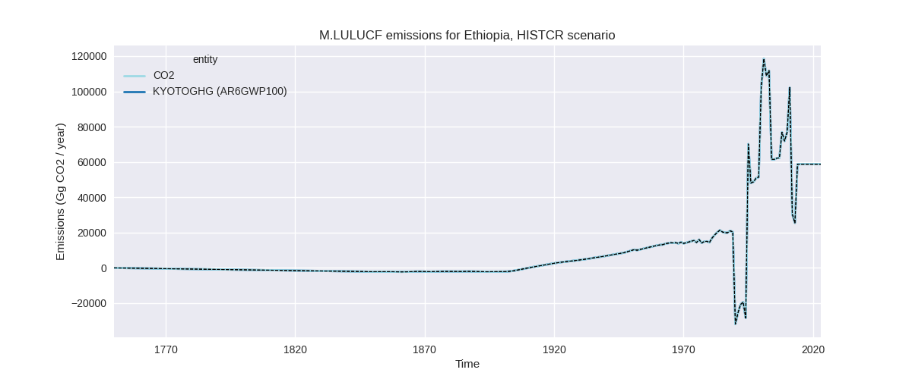
The following figures show the aggregate national total emissions excluding LULUCF AR6GWP100 for the third party priority scenario. The dotted linesshow the v2.6_final data.
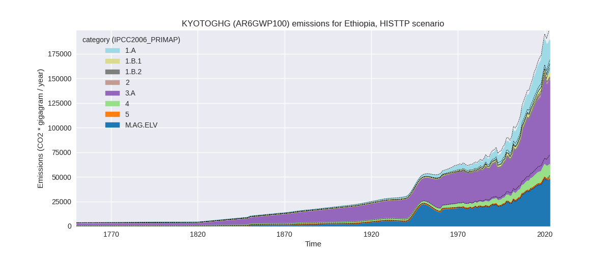
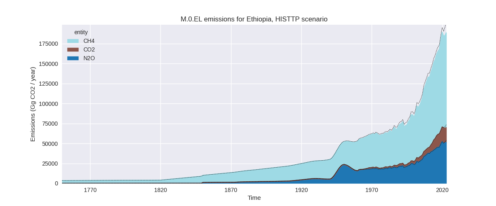
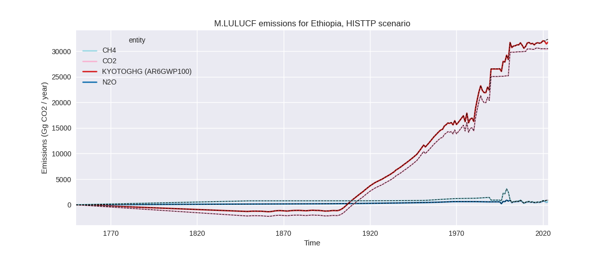
Overview over changes
In the country reported priority scenario we have the following changes for aggregate Kyoto GHG and national total emissions excluding LULUCF (M.0.EL):
- Emissions in 2023 have changed by -2.7%% (-4115.83 Gg CO2 / year)
- Emissions in 1990-2023 have changed by -0.2%% (-176.49 Gg CO2 / year)
In the third party priority scenario we have the following changes for aggregate Kyoto GHG and national total emissions excluding LULUCF (M.0.EL):
- Emissions in 2023 have changed by -6.5%% (-13085.60 Gg CO2 / year)
- Emissions in 1990-2023 have changed by -4.0%% (-4989.76 Gg CO2 / year)
Most important changes per scenario and time frame
In the country reported priority scenario the following sector-gas combinations have the highest absolute impact on national total KyotoGHG (AR6GWP100) emissions in 2023 (top 5):
- 1: 3.A, CH4 with -2805.93 Gg CO2 / year (-3.5%)
- 2: M.AG.ELV, N2O with -541.78 Gg CO2 / year (-5.2%)
- 3: 3.A, N2O with -500.78 Gg CO2 / year (-3.7%)
- 4: 2, CO2 with -390.80 Gg CO2 / year (-16.5%)
- 5: 1.A, CH4 with 114.76 Gg CO2 / year (0.7%)
In the country reported priority scenario the following sector-gas combinations have the highest absolute impact on national total KyotoGHG (AR6GWP100) emissions in 1990-2023 (top 5):
- 1: 3.A, CH4 with -144.74 Gg CO2 / year (-0.3%)
- 2: 1.A, CH4 with 40.83 Gg CO2 / year (0.3%)
- 3: 2, CO2 with -30.65 Gg CO2 / year (-2.1%)
- 4: M.AG.ELV, N2O with -27.35 Gg CO2 / year (-0.5%)
- 5: 3.A, N2O with -17.40 Gg CO2 / year (-0.2%)
In the third party priority scenario the following sector-gas combinations have the highest absolute impact on national total KyotoGHG (AR6GWP100) emissions in 2023 (top 5):
- 1: 4, CH4 with -7187.65 Gg CO2 / year (-37.0%)
- 2: 3.A, CH4 with -3121.13 Gg CO2 / year (-3.5%)
- 3: M.AG.ELV, N2O with -2482.56 Gg CO2 / year (-5.2%)
- 4: 2, CO2 with -800.96 Gg CO2 / year (-20.1%)
- 5: 1.B.1, CH4 with 641.76 Gg CO2 / year (15.7%)
In the third party priority scenario the following sector-gas combinations have the highest absolute impact on national total KyotoGHG (AR6GWP100) emissions in 1990-2023 (top 5):
- 1: 4, CH4 with -4561.53 Gg CO2 / year (-37.4%)
- 2: 3.A, CH4 with -160.99 Gg CO2 / year (-0.3%)
- 3: M.AG.ELV, N2O with -114.09 Gg CO2 / year (-0.4%)
- 4: 1.B.1, CH4 with -60.86 Gg CO2 / year (-1.9%)
- 5: 2, CO2 with -59.88 Gg CO2 / year (-3.9%)
Notes on data changes
Here we list notes explaining important emissions changes for the country.
- No new country reported data has been included. Changes in the CR time-series are relatively small for 2023 and very small for cumulative missions. They come from updated third party data (EDGAR, FAO) which is used to extrapolate the country reported data.
- In the TP scenario the dominating change is a 37% reduction in waste CH4 emissions in the new EDGAR data.
- Agricultural data is lower for 2023 (CR and TP) because of lower growth rates in the new FAO data.
Changes by sector and gas
For each scenario and time frame the changes are displayed for all individual sectors and all individual gases. In the sector plot we use aggregate Kyoto GHGs in AR6GWP100. In the gas plot we usenational total emissions without LULUCF.
country reported scenario
2023
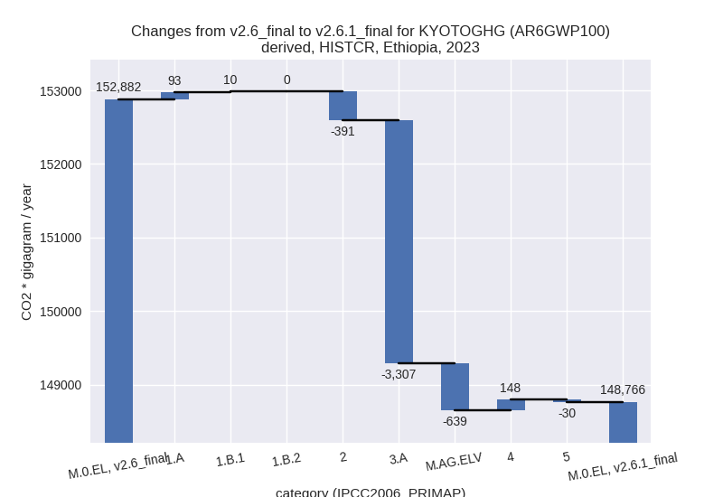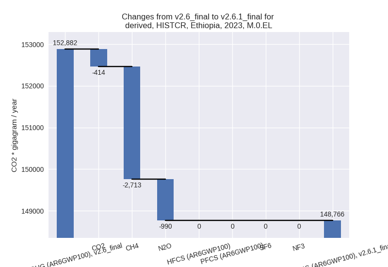
1990-2023
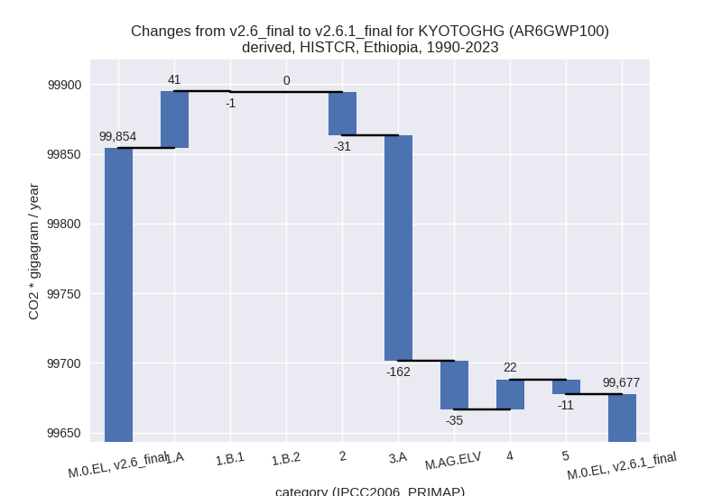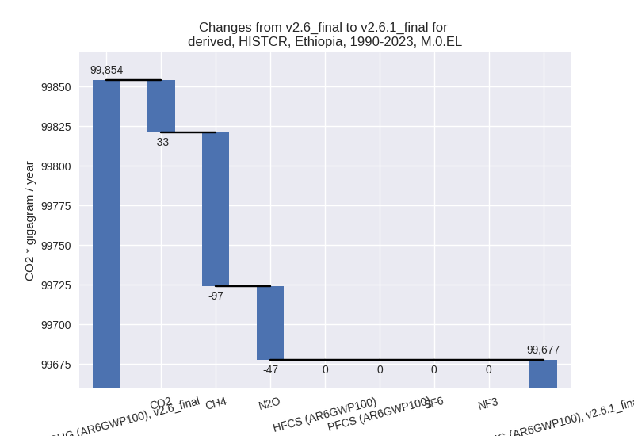
third party scenario
2023
 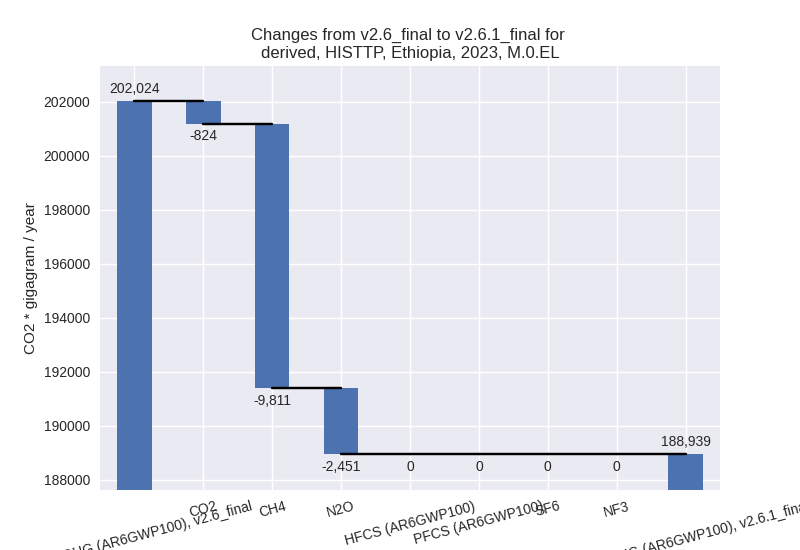
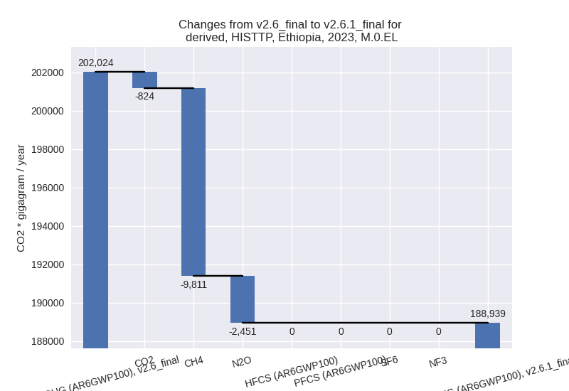
1990-2023
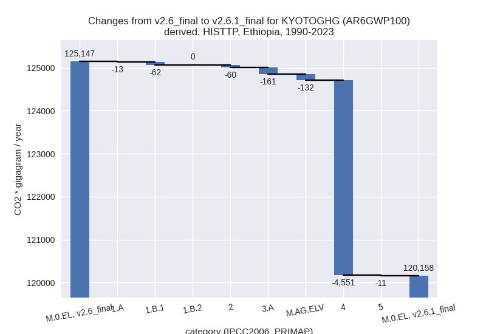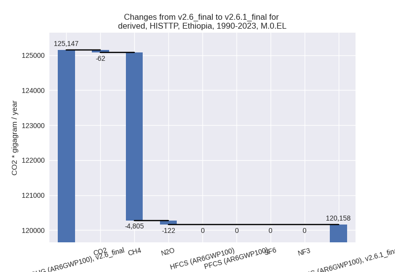
Detailed changes for the scenarios:
country reported scenario (HISTCR):
Most important changes per time frame
For 2023 the following sector-gas combinations have the highest absolute impact on national total KyotoGHG (AR6GWP100) emissions in 2023 (top 5):
- 1: 3.A, CH4 with -2805.93 Gg CO2 / year (-3.5%)
- 2: M.AG.ELV, N2O with -541.78 Gg CO2 / year (-5.2%)
- 3: 3.A, N2O with -500.78 Gg CO2 / year (-3.7%)
- 4: 2, CO2 with -390.80 Gg CO2 / year (-16.5%)
- 5: 1.A, CH4 with 114.76 Gg CO2 / year (0.7%)
For 1990-2023 the following sector-gas combinations have the highest absolute impact on national total KyotoGHG (AR6GWP100) emissions in 1990-2023 (top 5):
- 1: 3.A, CH4 with -144.74 Gg CO2 / year (-0.3%)
- 2: 1.A, CH4 with 40.83 Gg CO2 / year (0.3%)
- 3: 2, CO2 with -30.65 Gg CO2 / year (-2.1%)
- 4: M.AG.ELV, N2O with -27.35 Gg CO2 / year (-0.5%)
- 5: 3.A, N2O with -17.40 Gg CO2 / year (-0.2%)
Changes in the main sectors for aggregate KyotoGHG (AR6GWP100) are
- 1: Total sectoral emissions in 2022 are 34560.41 Gg CO2 / year which is 23.6% of M.0.EL emissions. 2023 Emissions have changed by 0.3% (103.49 Gg CO2 / year). 1990-2023 Emissions have changed by 0.2% (40.23 Gg CO2 / year).
- 2: Total sectoral emissions in 2022 are 2018.25 Gg
CO2 / year which is 1.4% of M.0.EL emissions. 2023 Emissions have
changed by -16.4% (-390.80 Gg CO2 /
year). 1990-2023 Emissions have changed by -2.1% (-30.65 Gg CO2 / year). For 2023 the
changes per gas
are:
For 1990-2023 the changes per gas are: - M.AG: Total sectoral emissions in 2022 are 98364.99
Gg CO2 / year which is 67.3% of M.0.EL emissions. 2023 Emissions have
changed by -3.8% (-3945.68 Gg CO2 /
year). 1990-2023 Emissions have changed by -0.3% (-196.96 Gg CO2 / year). For 2023
the changes per gas
are:
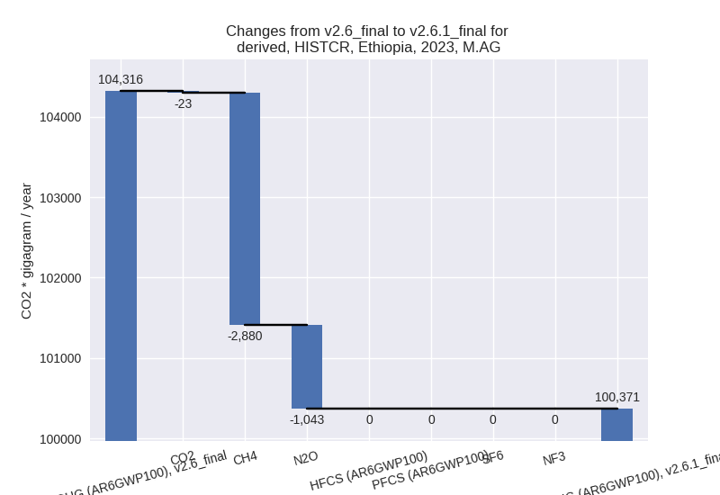
The changes come from the following subsectors:- 3.A: Total sectoral emissions in 2022 are 87676.10
Gg CO2 / year which is 89.1% of category M.AG emissions. 2023 Emissions
have changed by -3.6% (-3306.71 Gg
CO2 / year). 1990-2023 Emissions have changed by -0.3% (-162.14 Gg CO2 / year). For 2023
the changes per gas
are:
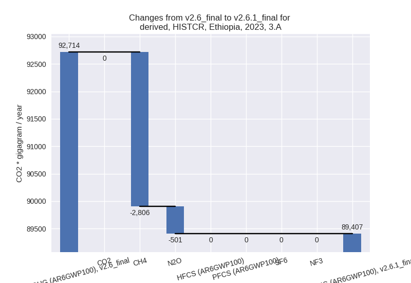
There is no subsector information available in PRIMAP-hist. - M.AG.ELV: Total sectoral emissions in 2022 are
10688.89 Gg CO2 / year which is 10.9% of category M.AG emissions. 2023
Emissions have changed by -5.5%
(-638.97 Gg CO2 / year). 1990-2023 Emissions have changed by -0.5% (-34.83 Gg CO2 / year). For 2023 the
changes per gas
are:
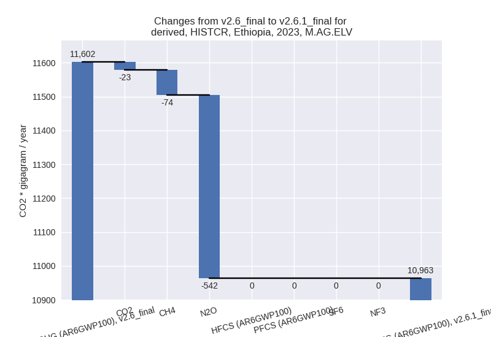
There is no subsector information available in PRIMAP-hist.
- 3.A: Total sectoral emissions in 2022 are 87676.10
Gg CO2 / year which is 89.1% of category M.AG emissions. 2023 Emissions
have changed by -3.6% (-3306.71 Gg
CO2 / year). 1990-2023 Emissions have changed by -0.3% (-162.14 Gg CO2 / year). For 2023
the changes per gas
are:
- 4: Total sectoral emissions in 2022 are 9869.98 Gg CO2 / year which is 6.8% of M.0.EL emissions. 2023 Emissions have changed by 1.5% (147.52 Gg CO2 / year). 1990-2023 Emissions have changed by 0.4% (21.50 Gg CO2 / year).
- 5: Total sectoral emissions in 2022 are 1336.81 Gg
CO2 / year which is 0.9% of M.0.EL emissions. 2023 Emissions have
changed by -2.2% (-30.36 Gg CO2 /
year). 1990-2023 Emissions have changed by -1.1% (-10.61 Gg CO2 / year). For 2023 the
changes per gas
are:
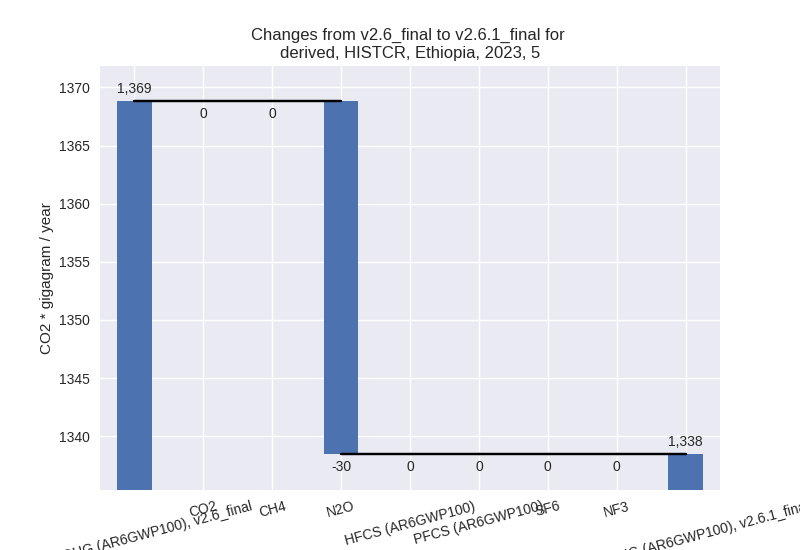
third party scenario (HISTTP):
Most important changes per time frame
For 2023 the following sector-gas combinations have the highest absolute impact on national total KyotoGHG (AR6GWP100) emissions in 2023 (top 5):
- 1: 4, CH4 with -7187.65 Gg CO2 / year (-37.0%)
- 2: 3.A, CH4 with -3121.13 Gg CO2 / year (-3.5%)
- 3: M.AG.ELV, N2O with -2482.56 Gg CO2 / year (-5.2%)
- 4: 2, CO2 with -800.96 Gg CO2 / year (-20.1%)
- 5: 1.B.1, CH4 with 641.76 Gg CO2 / year (15.7%)
For 1990-2023 the following sector-gas combinations have the highest absolute impact on national total KyotoGHG (AR6GWP100) emissions in 1990-2023 (top 5):
- 1: 4, CH4 with -4561.53 Gg CO2 / year (-37.4%)
- 2: 3.A, CH4 with -160.99 Gg CO2 / year (-0.3%)
- 3: M.AG.ELV, N2O with -114.09 Gg CO2 / year (-0.4%)
- 4: 1.B.1, CH4 with -60.86 Gg CO2 / year (-1.9%)
- 5: 2, CO2 with -59.88 Gg CO2 / year (-3.9%)
Changes in the main sectors for aggregate KyotoGHG (AR6GWP100) are
- 1: Total sectoral emissions in 2022 are 37442.49 Gg CO2 / year which is 20.2% of M.0.EL emissions. 2023 Emissions have changed by 1.9% (689.91 Gg CO2 / year). 1990-2023 Emissions have changed by -0.3% (-74.81 Gg CO2 / year).
- 2: Total sectoral emissions in 2022 are 3173.85 Gg
CO2 / year which is 1.7% of M.0.EL emissions. 2023 Emissions have
changed by -20.1% (-800.96 Gg CO2 /
year). 1990-2023 Emissions have changed by -3.9% (-59.88 Gg CO2 / year). For 2023 the
changes per gas
are:
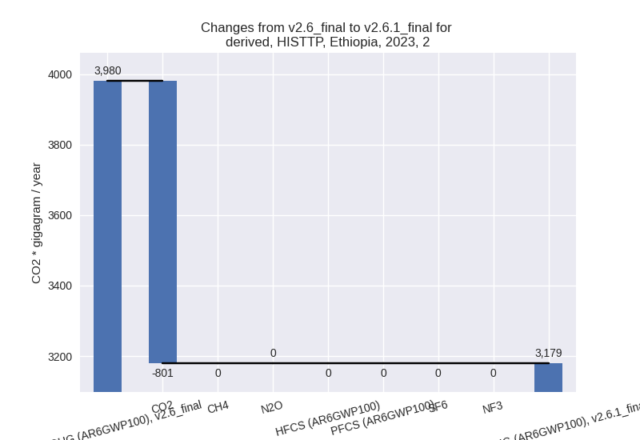
For 1990-2023 the changes per gas are: - M.AG: Total sectoral emissions in 2022 are
129800.80 Gg CO2 / year which is 70.1% of M.0.EL emissions. 2023
Emissions have changed by -4.2%
(-5864.59 Gg CO2 / year). 1990-2023 Emissions have changed by -0.3% (-293.74 Gg CO2 / year). For 2023
the changes per gas
are:

The changes come from the following subsectors:- 3.A: Total sectoral emissions in 2022 are 83387.96
Gg CO2 / year which is 64.2% of category M.AG emissions. 2023 Emissions
have changed by -3.5% (-3135.43 Gg
CO2 / year). 1990-2023 Emissions have changed by -0.3% (-161.49 Gg CO2 / year). For 2023
the changes per gas
are:
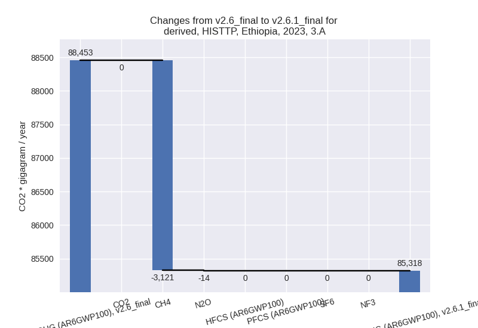
There is no subsector information available in PRIMAP-hist. - M.AG.ELV: Total sectoral emissions in 2022 are
46412.84 Gg CO2 / year which is 35.8% of category M.AG emissions. 2023
Emissions have changed by -5.4%
(-2729.16 Gg CO2 / year). 1990-2023 Emissions have changed by -0.4% (-132.25 Gg CO2 / year). For 2023
the changes per gas
are:
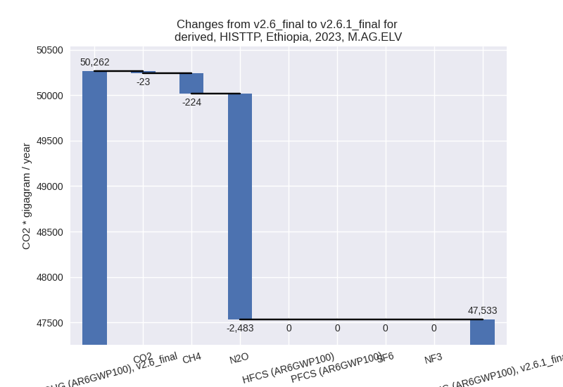
There is no subsector information available in PRIMAP-hist.
- 3.A: Total sectoral emissions in 2022 are 83387.96
Gg CO2 / year which is 64.2% of category M.AG emissions. 2023 Emissions
have changed by -3.5% (-3135.43 Gg
CO2 / year). 1990-2023 Emissions have changed by -0.3% (-161.49 Gg CO2 / year). For 2023
the changes per gas
are:
- 4: Total sectoral emissions in 2022 are 13399.79 Gg
CO2 / year which is 7.2% of M.0.EL emissions. 2023 Emissions have
changed by -34.0% (-7079.61 Gg CO2 /
year). 1990-2023 Emissions have changed by -34.8% (-4550.72 Gg CO2 / year). For 2023
the changes per gas
are:
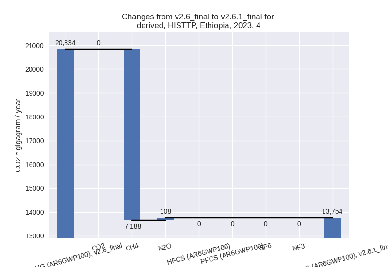
For 1990-2023 the changes per gas are: - 5: Total sectoral emissions in 2022 are 1336.81 Gg
CO2 / year which is 0.7% of M.0.EL emissions. 2023 Emissions have
changed by -2.2% (-30.36 Gg CO2 /
year). 1990-2023 Emissions have changed by -1.1% (-10.61 Gg CO2 / year). For 2023 the
changes per gas
are: